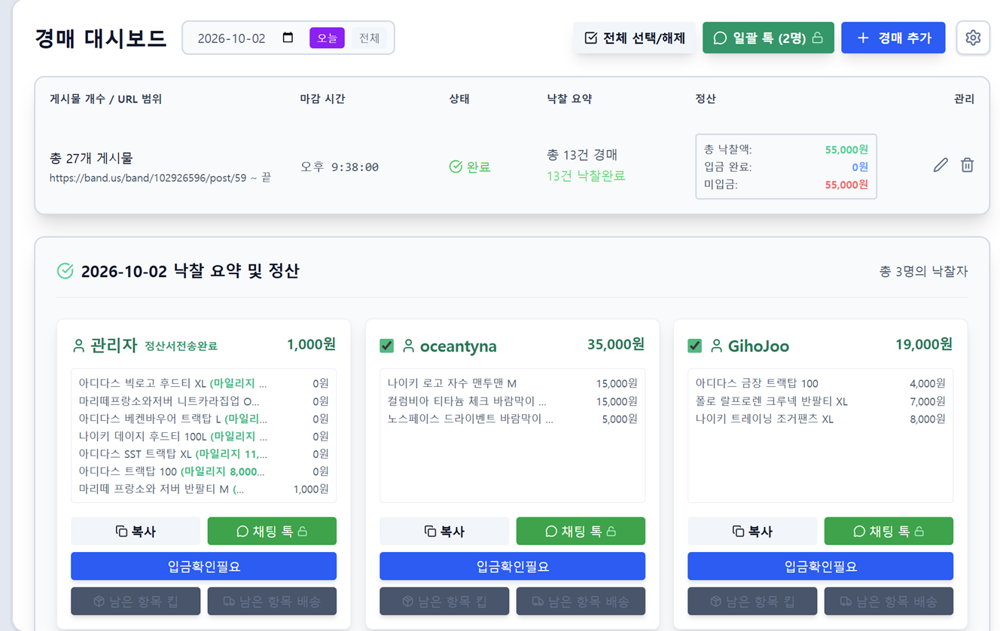
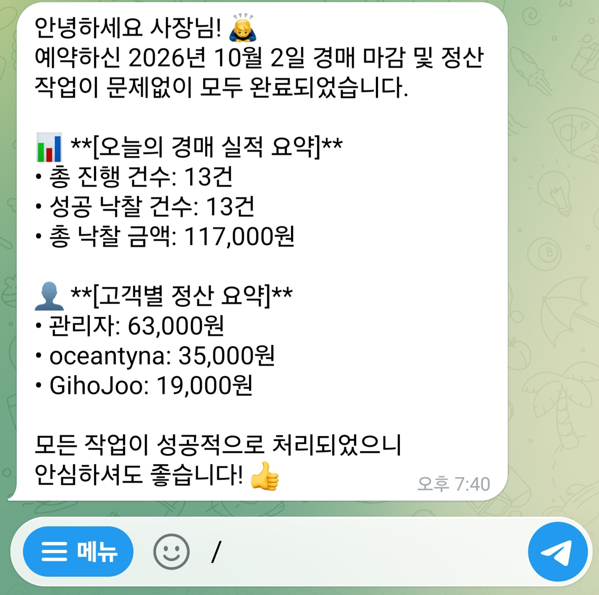
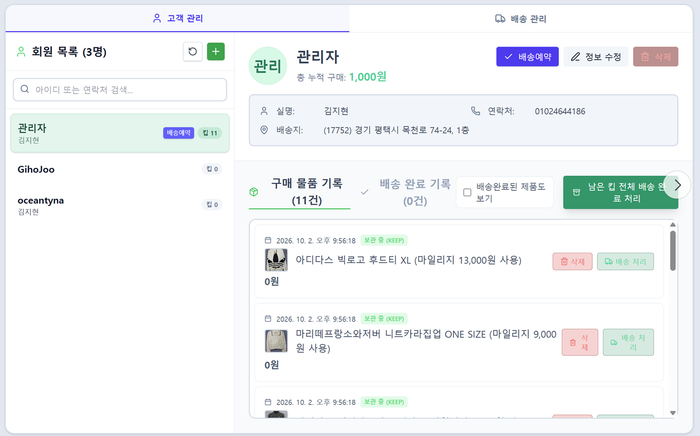
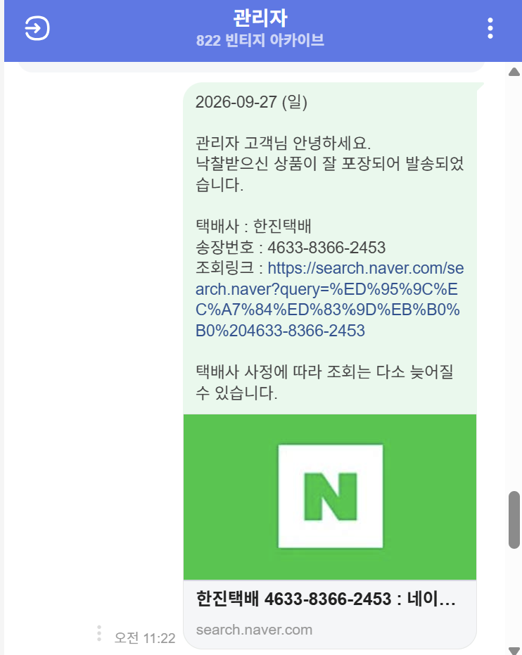
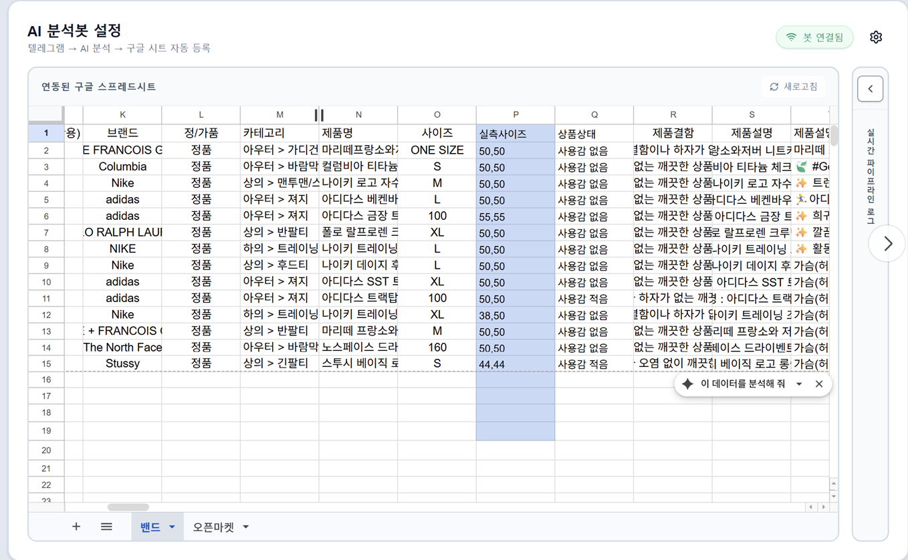
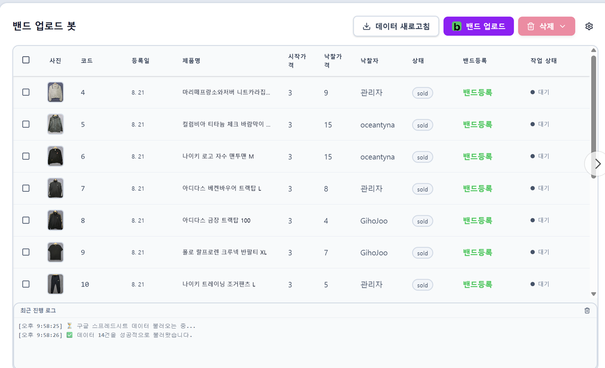
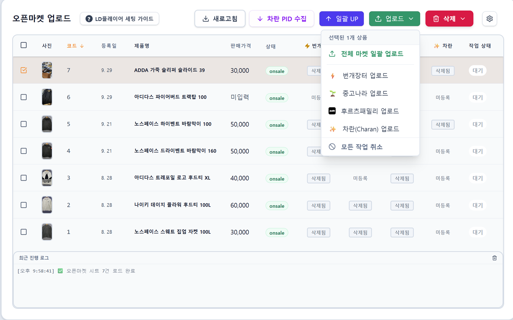

댓글 분석부터 마감까지,
클릭 한 번으로 끝내는 정산
수십, 수백 개의 댓글을 일일이 확인하실 필요가 없습니다.
설정한 마감 시간에 맞춰 시스템이 입찰 댓글을 정확히 분석해 낙찰자를 자동으로 판별합니다. 고객별 낙찰 물품과 금액을 합산하고 마일리지까지 적용하여 완벽한 정산서를 생성하며, 클릭 한 번이면 모든 낙찰자에게 1:1 메시지로 자동 전송됩니다.

마감이 끝나면 내 폰으로 즉시!
텔레그램 일일 실적 보고
PC 앞에 앉아있지 않아도 오늘의 매출을 바로 확인할 수 있습니다.
경매 마감 및 정산 작업이 완료되면, 오늘 진행된 총 경매 건수, 낙찰 금액, 그리고 고객별 요약 브리핑을 사장님의 개인 텔레그램으로 깔끔하게 발송해 드립니다. 퇴근길에도 폰 하나로 실적을 한눈에 파악하세요.

보관(Keep)부터 마일리지까지,
완벽한 CRM 및 송장 추출
단순한 경매 마감을 넘어 고객별 구매 이력과 마일리지를 체계적으로 관리하는 CRM 기능을 제공합니다.
고객이 낙찰받은 물품을 보관(Keep)하거나 배송 처리하는 과정을 직관적으로 관리할 수 있으며, 배송이 필요한 물건들은 원하는 택배사의 엑셀 업로드 양식에 맞춰 클릭 한 번에 대량으로 추출할 수 있습니다. 수기 작성의 고통에서 해방되세요!

"송장 나왔습니다~"
배송 안내 메시지도 100% 자동
택배사 프로그램에서 뽑은 송장 번호 엑셀을 시스템에 등록만 해주세요.
시스템이 알아서 해당 고객들을 매칭한 뒤, 정중한 인사말과 송장번호, 원클릭 배송조회 링크가 포함된 맞춤형 배송 안내 메시지를 밴드 1:1 채팅으로 자동 발송합니다. 배송 문의(CS) 응대 시간이 획기적으로 줄어듭니다.

옷 사진만 올리면 끝!
초강력 AI 제품 분석
매번 브랜드, 사이즈, 상태를 수기로 입력하느라 고생하셨나요?
제품 사진만 폴더에 업로드하면, 시스템에 탑재된 최첨단 AI 봇이 사진을 스스로 인식하여 브랜드, 카테고리, 제품명, 사이즈, 실측 사이즈, 상품 상태 및 결함 유무까지 완벽한 텍스트 데이터로 자동 변환해 줍니다. 데이터는 구글 시트로 깔끔하게 자동 등록됩니다.

즉시·예약 업로드부터
미낙찰 재등록까지 한 번에
AI가 분석한 데이터를 바탕으로 클릭 한 번에 밴드에 게시물을 업로드하세요. 즉시 등록은 물론, 원하는 시간대 예약 업로드도 완벽하게 지원합니다.
경매가 끝난 후 판매된 제품은 낙찰가와 낙찰자 정보가 완벽히 관리되며, 팔리지 않은 미낙찰(유찰) 제품은 다음 경매에 손쉽게 다시 끌어와 재등록할 수 있는 강력한 재고 순환 기능을 제공합니다.

번장·중나·후루츠·차란
오픈마켓 4곳 통합 관리
밴드에서 팔리지 않거나 단가가 높은 프리미엄 제품들은 더 넓은 시장에 노출해야 합니다.
밴드 어드민은 완성된 제품 데이터를 활용해 번개장터, 중고나라, 후루츠패밀리, 차란(Charan) 등 주요 중고 거래 플랫폼에 클릭 한 번으로 동시 다발적 자동 업로드를 지원합니다. 업로드뿐만 아니라 '전체 마켓 일괄 삭제', '상위 노출(UP)' 기능까지 지원하여 다채널 판매 효율을 극대화해 줍니다.
